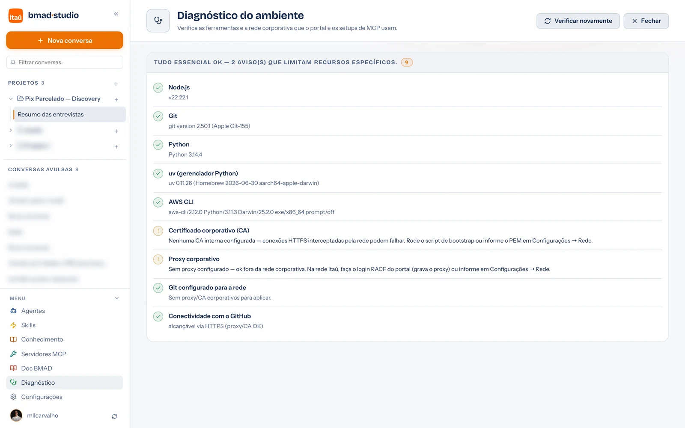
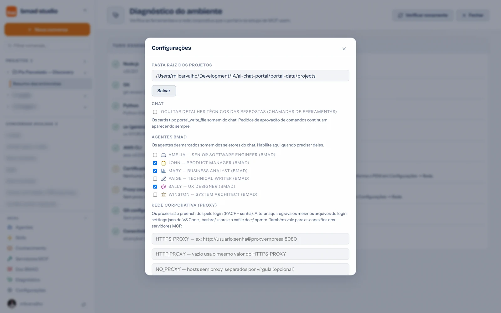

Guia de uso · 08
Diagnóstico e configurações
Quando algo não funciona — instalação, MCP, rede — a resposta quase sempre está na tela de Diagnóstico. E as Configurações concentram o que é ajustável no portal.
Diagnóstico

- O que confere: programas (Node, git, Python, AWS CLI, uv), configuração de rede (certificado corporativo, proxy, registry npm) e conectividade real (consegue falar com os serviços?).
- Quando roda: sozinho, em segundo plano, a cada abertura do portal. Só interrompe com um banner quando algo falha; avisos leves ficam só na página.
- Corrigir — várias verificações têm botão de correção automática (ex.: regravar uma configuração). Para as demais, o item mostra o que fazer.
- Verificar novamente — rode após instalar algo ou mexer na rede.
MCP não conecta? Diagnóstico primeiro. Proxy vencido (senha RACF),
CA ausente e registry sem auth são as causas de sempre — e os três aparecem lá.
Configurações

- Pasta raiz dos projetos — onde as pastas dos projetos são criadas no disco. Mude se quiser os projetos em outro lugar (ex.: uma pasta sincronizada).
- Chat — "Ocultar detalhes técnicos das respostas" esconde os cards de ferramenta (portal_write_file etc.) para uma leitura mais limpa; pedidos de aprovação continuam aparecendo sempre.
- Agentes BMAD — quais personas aparecem nos seletores do chat. Desmarcadas somem dos menus, mas continuam gerenciáveis aqui.
- Rede corporativa (proxy) — os valores preenchidos pelo login (RACF), editáveis: HTTPS_PROXY, HTTP_PROXY, NO_PROXY e a CA interna. Alterar aqui regrava os mesmos arquivos do login e vale também para as conexões dos MCPs.
- Microsoft (SharePoint) — o app do Entra ID usado para ler SharePoint nas bases de conhecimento.
- Conta e status — a conta GitHub conectada via VS Code, a versão do portal e os modelos disponíveis.
Onde pedir ajuda
A FAQ cobre os erros mais comuns com solução direta. Não resolveu? Fale com o time — os canais estão em Quem somos.